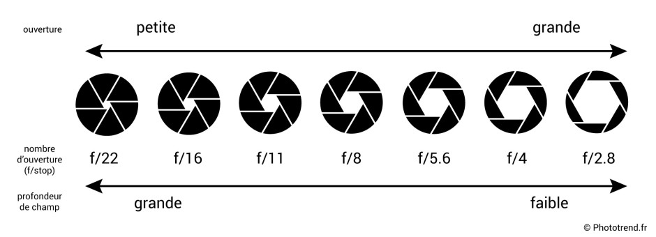
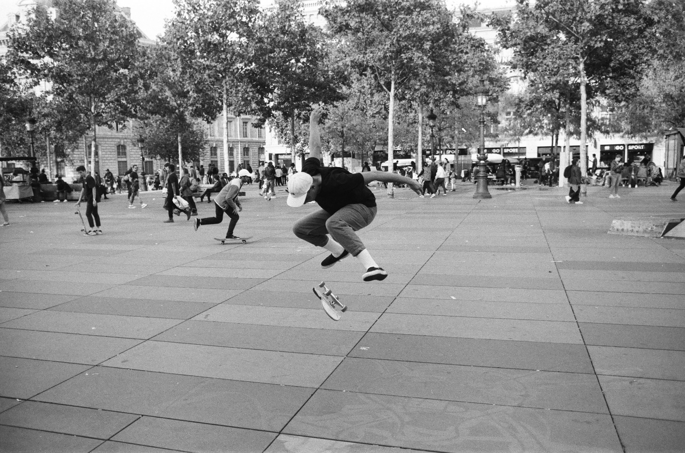

La photographie argentique
Différents concepts à propos de la photographie argentique
Si la photographie argentique semblent disparaitre petit à petit, quelques boutiques de la capitale continuent de développer cette méthode photographique d'une génération passée. L'argentique, qui en comparaison est plus chère que le numérique, semble effectivement regagner en popularité et nottament auprès d'une jeune génération qui se réintéresse à des pratiques qu'elle n'a pas connus.
Sur cette page vous trouverez des informations sur les principaux points à prendre en compte avant de se lancer dans la photographie argentique.
Le boitier
Bien que la majorité des boitiers argentique actuellement disponibles sur le marché sont des boitiers d'occasions, il existe toujours quelques appareils neufs. Et c'est ici que se joue le premier choix. Pour débuter, que ce soit question budget et capacité, il est en général conseiller de commencer avec un boitier d'occasion. Je développerai donc sur quel appareil est conseillé pour un débutant mais pour des informations sur les boitiers neufs cliquez ici. Pour un débutant deux boitiers sont en général conseillés. Le Canon AE1 Program et le Minolta X500. Si chacun des deux boitiers dispose d'un mode automatique, qui détermine les réglages nécessaires pour la meilleure exposition, et d'un mode manuel pour lequel vous pouvez faire vos propres réglages pour l'ouverture et la vitesse d'obturation. Un facteur qui est également à prendre en compte repose sur la disponibilité de pièces détachées et d'objectifs de chacune des deux marques. Sur cette caractéristique, la marque Canon apparait comme numéro un par la multitude d'objectifs disponible sur le marché actuellement.Cliquez ici pour une revue complète du Minolta X500 et du Canon AE1 Program
L'exposition
La pellicule
 Les pellicules argentiques sont caractérisées par deux informations. Couleur ou Noir & Blanc et le nombre d'ISO.Si la couleur est explicite, le terme ISO lui, est surement moins clair. Les ISO correspondent à la sensibilité de la pellicule à la lumière. Ainsi plus l'ISO est bas, plus votre environnement doit être lumineux. Par exemple, une pellicule d'ISO 100 sera efficace en journée ensoleillé. A l'inverse une pellicule d'ISO 1600 sera intéressante à utiliser dans un environnement sombre comme un concert ou pour des photos de nuit. Il est nécessaire de savoir que plus la sensibilité augmente plus la qualité sera réduite et le grain sera présent. Plus d'infos sur le choix de pellicule ici .
Les pellicules argentiques sont caractérisées par deux informations. Couleur ou Noir & Blanc et le nombre d'ISO.Si la couleur est explicite, le terme ISO lui, est surement moins clair. Les ISO correspondent à la sensibilité de la pellicule à la lumière. Ainsi plus l'ISO est bas, plus votre environnement doit être lumineux. Par exemple, une pellicule d'ISO 100 sera efficace en journée ensoleillé. A l'inverse une pellicule d'ISO 1600 sera intéressante à utiliser dans un environnement sombre comme un concert ou pour des photos de nuit. Il est nécessaire de savoir que plus la sensibilité augmente plus la qualité sera réduite et le grain sera présent. Plus d'infos sur le choix de pellicule ici .
L'ouverture
 L'ouverture, qui est représentée par un chiffre, permet de jouer sur la quantitée de lumière qui rentre dans l'objectif. L'ouverture correspond à l'ouverture du diaphragme. Comme expliqué ci-contre, plus le chiffre est petit plus l'ouverture est grande et plus le chiffre est grand plus l'ouverture est petite. Le chiffre correspond enfait à un dénominateur, c'est pourquoi la relation est négative. Une ouverture de 2.8 permet d'avoir plus de lumière, une ouverture de 22 à l'inverse laissera moins de lumière rentrer. L'ouverture joue également sur la profondeur de champs, plus le chiffre est bas plus la profondeur est basse. Une profondeur basse fait ressortir le sujet par rapport à l'arrière plan. Pour plus d'informations sur l'ouverture cliquez ici .
La vitesse d'obturation
La vitesse d'obturation est le dernier point à prendre en compte pour régler l'exposition d'une photo.Comme pour l'ouverture elle est définie par une fraction qui donne la durée en secondes durant laquelle l'obturateur va s'ouvrir lorsuqe vous appuyez sur le déclencheur. Plus le dénominateur est haut, 1/1000ème par exemple, plus l'obturateur s'ouvre et se referme rapidement. Cette situation laisse moins entrer de lumière mais supprime les flous de mouvements. Une vitesse basse, 3 secondes par exemple, laisse entrer beaucoup de lumière mais chaque mouvement apparaitra flou. Plus d'informations ici .

Sur la photo à gauche, l'ouverture est de 2 secondes. Le mouvement des voitures est pris en compte, et seuls les phares apparaissent sur le rendu final. Sur celle de droite, l'ouverture est 1/1000 secondes, le skateboard est net.
Le développement
 Il est possible de développer soi même ses pellicules argentique, mais il est conseillé de d'abord faire appel à des laboratoires professionnels. Le retour sur investissement dans le développement maison est intéressant mais il faut avoir le matériel nécesssaire. Si malrgé tout vous voulez essayer, plus d'informations sur comment développer soi-même ses pellicules ici.
Il est possible de développer soi même ses pellicules argentique, mais il est conseillé de d'abord faire appel à des laboratoires professionnels. Le retour sur investissement dans le développement maison est intéressant mais il faut avoir le matériel nécesssaire. Si malrgé tout vous voulez essayer, plus d'informations sur comment développer soi-même ses pellicules ici.